Welcome to the Creation Station's official site! Become one of the contibutors, find amazing resources, or learn how to share the project in your community.
You and your child can do something amazing with the Creation Station! When children learn with the Station, they will be provided with the necessary tools to begin writing and illustrating their own books with plot and characters!

All of the materials including How to Write and How to Illustrate found at The Creation Station PLUS bonus content are right this way!
See the guides!